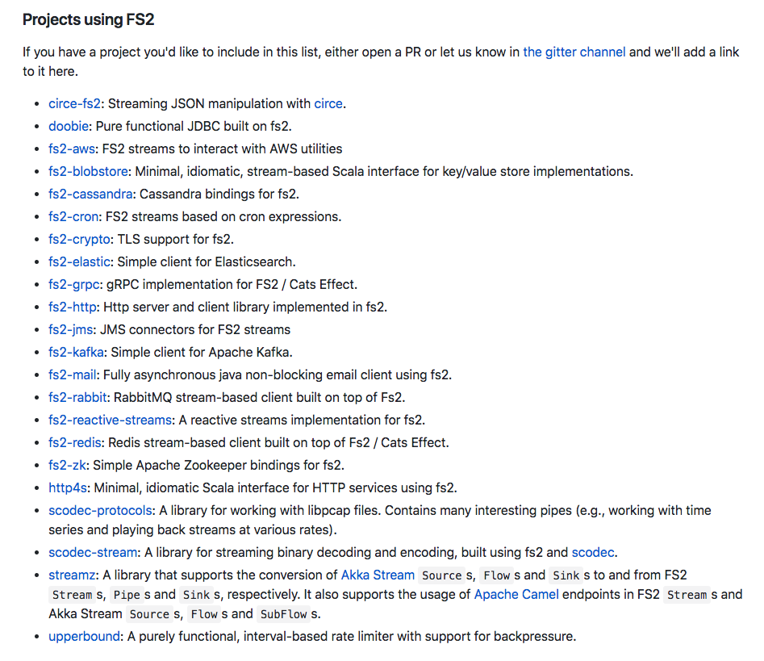

Incremental purity
Moving to functional programming principles
Jakub Kozłowski - Scala Developer, Ocado Technology Scala Dublin | November 27, 2018 | Dublin, IrelandAbout me
- Living in Wrocław, Poland
- Doing Scala for 3 years
- Working @ Ocado Technology
- Loves ramen
- Running and lifting when not injured
Functional programming is great
Take it from these guys
How to do pure FP?

We'll use cats and cats-effect, Typelevel projects
Agenda
- Why FP
- Flavors of side effects
- Making effects first-class
- Summary
Why FP?
What's FP?
Lack of side effects
Definition of a side effect
Lack of referential transparency
Referential transparency
for any expression `a`
given `x = a`
All occurrences of `x` in a program `p` can be replaced with `a`
val prog1 = (x, x)
val prog2 = (a, a)
prog1 == prog2Pure expressions are RT
Side effects?
Future
IO
Running IO
If nothing has happened yet, how do we actually run an IO?
Running IO
Do we really need to do unsafe?
No ;)
Referential transparency == Pure FP
Richest link you'll see today: Documentation of cats.effect.IO (concurrency, parallelism, threadpools, referential transparency, everything)
Impure programs
Run action in repository
- Prepare repository
- Run action in repository
- Regardless of the result, clean up
Pure programs
(prepareRepo *> runInRepo).guarantee(cleanup)
a *> b == a.flatMap(_ => b) //import cats.syntax.apply._Pure programs
Order of evaluation
Depends solely on how you compose pieces
Why is referential transparency important?
- Equational reasoning
- Programs as values
- Local reasoning
- Explicit effects, predictable code
Why is RT (in Scala) hard?
- Initial learning curve
- Takes discipline
- Tooling (tracing, debugging)
- Harder in PoC
- Non-straightforward migration
- Mostly impure ecosystem
Flavors of side effects
- Local mutable state, exceptions
- Calling Java APIs, callbacks-based APIs
- Logging, metrics, caches
- Shared, concurrent in-memory state
- Reading from/writing to files
- Databases, HTTP
- Futures
- Streaming data
- Actors (concurrent mutable state, concurrency control, asynchronous processing, distributed computing, event sourcing)
Making effects first-class
Local mutable state
Local, immutable state
Local, immutable state (pipes)
Local, immutable state (with streams)
What about effects?
Case 2
Given a list of tasks:
case class Task(skill: Skill)
case class Skill(name: String)Execute all of them and return the total time.
Rules:
- if the skill needed is already known, it takes 1 second
- otherwise, it takes 10 seconds + you get 1 skill point
- it takes 5 skill points to learn a skill
Local mutable state: case 2
Immutable version
Local, immutable state: case 2
Tools
- Lenses
- Classy lenses
- State monad
- Writer monad
- fs2 Streams
How to do this?
- Monocle lenses
- State monad
- cats-mtl (intro, website)
- Next level MTL (talk, lib for Scala)
- Another tutorial for MTL style
- fs2 guide
throw
Either
NoThrows.scala
tagless final + MTL
Tools
- Either
- cats-mtl
- cats-effect (Sync[F])
Java APIs
- Side effects
- Manual resource management
- Asynchronous callbacks
Side effects, resource management
Just wrap in IO?
What about effects?
Just wrap in IO?
Doesn't work
try/finally isn't suitable for effects
- Doesn't work with async
- Non-compositional
- Easy to get wrong
Effects & resources with Bracket
Composable resources with Resource
Async callbacks
Async callbacks: IO
Async callbacks & resources: case study (ActiveMQ)
Demo time? ActiveMqResource.scala
Learning resources
Logging, metrics, caches
Logging
Logging
TODO small sample of logging directly
Logging
Metrics
- Just another effect
- tek/cattrix
Metrics
import cattrix.Metrics
import dbframework.DatabaseQuery
def databaseQuery: IO[DatabaseQuery] = ???
val prog: Metrics.Step[IO, DatabaseQuery] = for {
t <- Metrics.timer("time")
_ <- Metrics.incCounter("active")
query <- Metrics.run(() => database.query("12345"))
_ <- Metrics.decCounter("active")
_ <- Metrics.time(t)
_ <- Metrics.mark("success")
} yield queryOr roll your own
Caching
Creating a cache is effectful
TODO przykład i link do talka fabia
File IO
Databases/HTTP
todo przykłady z doobiego, przykłady z http4s client+server, slick DBIO ~> FFutures
Streaming data
Just use fs2
Or scalaz-zio stream (when it's ready ;))
fs2 integrations
FAQ
Code is red in IntelliJ? https://impurepics.com/posts/2018-08-09-troubleshoot-cats.html Code doesn't compile? Turn on partial unification, don't import conflicting syntax implicits
Acknowledgements
This talk wouldn't be possible without countless hours of work of:
Alex Nedelcu, Fabio Labella, John A De Goes, Michael Pilquist, Daniel Spiewak, Ross A. Baker, Paul Chiusano, Pavel Chlupacekand many others
Links
Slides: https://git.io/fp017
Code: https://git.io/fp01d
More links
https://vimeo.com/294736344
https://www.youtube.com/watch?v=x3GLwl1FxcA
https://twitter.com/jdegoes/status/936301872066977792
https://twitter.com/impurepics/status/983407934574153728
https://github.com/pauljamescleary/scala-pet-store
https://www.youtube.com/watch?v=oFk8-a1FSP0
https://www.youtube.com/watch?v=sxudIMiOo68
https://www.youtube.com/watch?v=GZPup5Iuaqw
https://www.youtube.com/watch?v=EL3xy9DKhno
https://www.youtube.com/watch?v=X-cEGEJMx_4
https://www.youtube.com/watch?v=0jIaeXMaH2c
https://www.youtube.com/watch?v=po3wmq4S15A
https://www.youtube.com/watch?v=7xSfLPD6tiQ
https://www.youtube.com/watch?v=5S03zTekRJc
https://typelevel.org/blog/2018/10/06/intro-to-mtl.html
https://typelevel.org/blog/2018/08/25/http4s-error-handling-mtl.html
https://typelevel.org/blog/2018/08/07/refactoring-monads.html
https://typelevel.org/blog/2018/06/07/shared-state-in-fp.html
https://www.reddit.com/r/scala/comments/8ygjcq/can_someone_explain_to_me_the_benefits_of_io/e2jfp9b/
https://github.com/gvolpe/typelevel-stack.g8
https://github.com/gvolpe/http4s-good-practices
https://github.com/gvolpe/advanced-http4s
https://github.com/kubukoz/brick-store
https://github.com/kubukoz/classy-playground
https://github.com/ChristopherDavenport/log4cats
https://github.com/ChristopherDavenport/linebacker
https://github.com/ChristopherDavenport/cats-par
https://github.com/ChristopherDavenport/log4cats-writer-example
https://github.com/SystemFw/upperbound
Thank you!
Get in touch